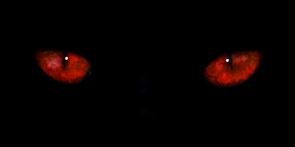

— Мама! — Олечка подошла к маме Оксане, которая усердно читала учебник — готовилась к сдаче госэкзамена в университете. Приходилось читать и на улице, пока дочка гуляла. — Да, милая? — машинально ответила Оксана. — Мальчик из того дома сказал мне передать чёрному дяденьке с другого дома, что тому надо убираться отсюда как можно быстрее. Оксана оторвала взгляд от книги и уставилась на пятилетнюю дочь. — Оля, повтори, что ты сказала? Какой мальчик, какой дяденька? Оля вздохнула и повернулась к пустующему дому, приготовленному строителями под снос. — Мальчик из этого дома, — Оля показала на дом под снос, — попросил меня сказать чёрному дяденьке из того дома, — Оля указала на торчащие трубы котельной, — что ему надо убраться отсюда как можно быстрее. — И что, ты передала чёрному дяденьке слова мальчика? — улыбаясь, спросила Оксана. — Передала. — Он сказал, что рад бы убраться, но не может — у него нет подходящего топлива. — А он? — Очень интересно. — Оксана вообще не поняла, что происходит и как ей реагировать на слова маленькой дочери. — Молодец, что передала. Оксана снова уткнулась в учебник. Но дочка оторвала маму от чтения: — Мы должны передать тому чёрному человеку топливо, чтобы он улетел. Ему очень плохо в том доме, там жарко! У него только три дня, а потом жизненные силы покинут его. Оксана не знала, что ответить. — Оля, давай займёмся чёрным дяденькой через три дня, после того, как я сдам экзамен. — Нет, он уже умрёт тогда! — Милая, я не могу ему ничем помочь. — Нам надо сходить к нему и спросить, где взять топливо. — Оля уже хныкала. — Мама, мне жалко того чёрного дяденьку, он плачет, ему очень-очень плохо! И тут, откуда ни возьмись, появился Андрей — старший брат Оли. — Андрей, я не пойму, что такое увидела Оля, попробуй разобраться. Поговори с сестрой. — Мама, Ольга видит привидения, и они общаются с ней. — Что, что? — глаза женщины расширились. — В этом заброшенном доме живёт привидение какого-то мальчика, примерно моего возраста — лет одиннадцати-двенадцати. Оля с ним постоянно общается. Этот мальчик рассказал сестре, что в котельной живёт какой-то чёрный человек и ему надо помочь. — Бред полный, сынок. — Сынок, у твоей сестры странные фантазии, очень странные. — Нет, мама, это не фантазии. Мы с пацанами сегодня сходили в котельную и слышали странный голос какого-то животного в том помещении, на которое указал мальчик-привидение. Там точно кто-то есть, и он точно боится света. — Господи, вы что, забрались в котельную? — Да, со мной был мой друг Лёшка и его старший брат — ему восемнадцать лет, поэтому мы не боялись. Мы хотели узнать, какое надо топливо чёрному человеку. Не получилось увидеть человека — он не вышел из темноты. Надо пойти туда ночью, когда нет дневного света. — Ты что, я ни за что не пущу тебя! — Вчера Оля мне рассказала про этого чёрного человека. Только мне кажется, он совсем не похож на человека, потому что живёт в полной темноте. — Сынок, у твоей сестры странные фантазии, очень странные. — Нет, мама, это не фантазии. Мы с пацанами сегодня сходили в котельную и слышали странный голос какого-то животного в том помещении, на которое указал мальчик-привидение. Там точно кто-то есть, и он точно боится света. — Господи, вы что, забрались в котельную? — Да, со мной был мой друг Лёшка и его старший брат — ему восемнадцать лет, поэтому мы не боялись. Мы хотели узнать, какое надо топливо чёрному человеку. Не получилось увидеть человека — он не вышел из темноты. Надо пойти туда ночью, когда нет дневного света. — Ты что, я ни за что не пущу тебя! — Я знаю, поэтому туда пойдёт Лёшка с братом. В этот момент Оля, которая отвернулась от мамы и упорно смотрела на пустующий дом, начала что-то шептать. Сначала тихо, почти чуть слышно, а потом громче: — Надо топлива десять литров, чтобы вернуться НАВЕРХ! Топливо белое-белое! Чёрный человек не знает, как оно называется, но у него есть немного, и он может показать его. Торопитесь, у него дыхательной смеси только на трое суток осталось! Спасите его! — глаза Ольги смотрели на маму не мигая. Оксана удивлённо слушала дочь. Что это такое, что это за слова? Голос дочери изменился и напоминал голос мальчика. Женщина не понимала, как на это всё реагировать. Оля продолжила: — Мама, вечером мы должны найти чёрного дяденьку. Оксана задумалась. — Хорошо, в двадцать часов мы пойдём туда. Андрей, звони Лёше, попроси меня взять с собой. — А можно я тоже пойду? — Пойдём, Андрей. Так уж и быть. — Оксана сама не знала, что она делает. Но внутренний голос требовал сделать это. Вечером Оксана и брат Лёши созвонились и договорились, что пойдут вчетвером в котельную. Понятно, что просто так туда не пройти, но брат Лёши — Максим — пояснил, что проникнуть в котельную несложно: в заборе есть лаз, и все пройдут, а там видно будет. Всё это так странно и необычно — как только она решилась войти в это предприятие? Вообще на неё не похоже. Но у женщины появилось стойкое ощущение правильности решения, его нужности, и Оксана не смогла бороться с ним. Собираясь, женщина взяла с собой деньги, сумку с продуктами, воды — мало ли что может пригодиться! Сегодня они разберутся с этим чёрным человеком, и завтра Оксана спокойно продолжит готовиться к экзаменам. Пять лет Оксана училась заочно в институте. Поступила в него, когда ей уже было двадцать два года. Муж погиб в аварии, а она осталась с двумя маленькими детьми, поэтому надо было приобретать хорошую профессию, чтобы одной содержать семью. И у Оксаны получилось. Через три дня последний госэкзамен и диплом в кармане. А тут такое странное событие, которое оторвало её от важного, самого важного дела. В котельной Вечером встретились все четверо, как договорились. Оксана познакомилась с братом Лёши — Максимом, и тот сообщил, что он договорился со сторожем котельной посмотреть те помещения, где они слышали голос прошлый раз. Всё оказалось проще, чем могло быть. Сторож, принимая гостей, решил провести ознакомительную экскурсию за приличное вознаграждение. Поэтому все четверо легко оказались в котельной. Гости, делая вид, что им интересна экскурсия, усиленно рассматривали всё оборудование предприятия, фотографировались на фоне необычных помещений. Минут через двадцать они оказались возле того самого помещения, где слышали голос. И тут Максим, понимая, что надо как-то отвлечь сторожа, попросил Оксану что-нибудь придумать, и она придумала — она упросила сторожа сводить её в туалет. Сторож повёл женщину, а в это время оставшиеся экскурсанты быстро заскочили в тёмное помещение. Едва они вошли туда, как раздался странный голос. Тут, у самых глаз Максима появилось нечто. Света в помещении почти не было, и очертания кого-то казались странными — большое, метра полтора в высоту, чёрное овальное существо, по форме напоминающее огурец. Максим отскочил назад. На существе видны были только красные глаза, и эти глаза плакали. Жалость закралась в душу людей мгновенно. Существо хныкало как ребёнок. Оно что-то пыталось сказать, но его, конечно, никто не понял. Существо лепетало и лепетало. Все стояли и чего-то ждали — они просто не знали, как ему помочь. Видимо, в какой-то момент существо поняло свою ошибку и побежало внутрь помещения. Через пару минут оно вернулось и передало людям предмет, похожий на кружку. Максим взглянул в неё и увидел там белую жидкость. Существо залепетало и толкало кружку. — Наверно, это и есть топливо. Видишь, оно белое, как говорила Оля. — произнёс Андрей. Максим забрал кружку и махнул головой, стараясь этим показать, что он понял. В этот момент раздался голос сторожа, и все, кто находился в тёмной комнате, вышли из помещения. На следующий день Утром Оля разбудила маму. — Мама, наш кот Васька выпил то белое, что было в кружке. — Что выпил? — не поняла Оксана. — То, что было в кружке на балконе. — Господи, там же топливо! И что с Васькой? — Ничего, он сидит, умывается. — Надо же. Как же мы теперь узнаем, что за топливо нужно чёрному существу? Я должна была сегодня отнести его в нашу институтскую лабораторию. — Мальчик с пустого дома сказал, что это просто молоко. Вот Васька и выпил его. — Невероятно! Просто молоко? Позвоню сейчас Максу. Оксана взяла телефон и рассказала Максу про то, что топливо это, оказывается, простое молоко. После чего они долго смеялись. — Так получается, нам надо отнести десять литров молока в котельную! И как же мы пронесём его? Что придумать? — спросила Оксана Максима. Решили подождать до вечера, когда Максим придёт с работы и подумает о том, как это сделать. Оля молча слушала разговор мамы по телефону. И когда та закончила, произнесла: — Мальчик сказал, что надо привезти молока, как будто оно для рабочих котельной. Оксана посмотрела на дочь. А что, нормальная идея! Какой умный мальчик-привидение! Позднее Несколько ящиков с молоком доставили в котельную. Бесплатное молоко приняли на ура. Сопровождающие груз мужчина и женщина были одеты в униформу какого-то акционерного общества, от которого якобы пришёл подарок. Мужчина уверенно разгружал ящики, а женщина передавала сопроводительные документы. Одно условие — необходимы фотографии с котельной, подтверждающие то, что все рабочие получили молоко. И вот наши герои-спасатели оказались на территории котельной. Едва они появились внутри котельной, как откуда-то раздался тот странный голос, уже знакомый и Максиму, и Оксане. В этом голосе ощущалось отчаяние и страх. Макс не выдержал и крикнул кому-то: — Мы идём, держись! — Он схватил ящик с десятью бутылками молока и побежал по помещению котельной. Работники, собравшиеся «на молоко», удивлённо смотрели вслед беглецу. — Куда это он? — спросил кто-то женщину. — А там у него работает знакомый, вот он и рванул к нему. Рабочие стали задавать ещё вопросы, но женщина, приятно улыбаясь, только пожимала плечами, показывая тем самым, что ей ничего больше не известно. Минут через двадцать Максим вернулся. Его довольное лицо говорило о том, что всё получилось. — Ну что? — тихо спросила Оксана. — Выйдем отсюда — расскажу. Когда благотворительная акция закончилась, наши шпионы благополучно покинули котельную, и едва машина отъехала от предприятия, Макс не удержался: — Оксана, ты не представляешь, что было! Этот чёрный «огурец» тут же выпил всё молоко и стал превращаться в большого «огурца», просто огромного — ростом до двух этажей! Он стал гудеть как мотор и вдруг рванул в коридор, оттуда стрелой полетел к отверстию на крыше и улетел! — Ты шутишь? — Нет, он улетел! — Господи, он и правда инопланетянин! — А ты думала кто, человек, что ли? Конечно, инопланетянин! — Так значит, дочка и правда видит привидения. А привидения видят инопланетян! Возникает вопрос, а инопланетяне видят привидения? — Думаю, нет. Их никто не видит. — Дочка видит. — Ах да, существуют такие люди, но до этого они мне не встречались. Хотя именно Оля рассказала нам о чёрном человеке. Не могла же она сама его увидеть в котельной. — Макс задумался. — Очень странная история, в которой столкнулись три мира — потусторонний, инопланетный и обычный мир человека! Но каков «огурец»! Представляешь, он сам летает! — Может, это машина? — Он плакал, ты видела. — Да, но может, машины так запрограммированы! — Не думаю. Мне кажется, он был живой. — В любом случае мы свою миссию выполнили. Я свободна и могу готовиться дальше к экзамену. Через два дня, госэкзамен Страшное волнение студентов перед экзаменом, казалось, передаётся по воздуху. Нервы напряжены как струна. Оксана волновалась не меньше других. Она сотый раз перечитывала самые трудные темы. Вышла секретарь, позвала в аудиторию одного из студентов и произнесла: — Приготовиться Оксане Рубиной. Оксана вздрогнула от своего имени. Сердце бешено забилось. И тут женщина услышала тихий шёпот мальчика: — Чёрный человек передал тебе номер билета — шестой. После экзамена Неожиданная пятёрка, полученная Оксаной на экзамене, — это счастье. Всё — у неё высшее образование! Сейчас женщина была самым счастливым человеком на свете. На экзамене ей выпал билет номер шесть! Так бывает — озарение в последнюю минуту! И вот всё позади. Оксана позвонила Максу и сообщила ему, что успешно сдала экзамен и теперь можно отметить это счастливое событие. Оказалось, Максим тоже был в приподнятом настроении и сообщил, что его повысили в должности! Абсолютно неожиданно. И его поздравил какой-то мальчик, позвонив по телефону. Этот мальчик передал привет от чёрного человека. Макс понятия не имел, что это за мальчик. Оксана не стала рассказывать Максу историю с билетом номер шесть. Может, потом, чуть попозже, и расскажет. Женщина задумалась после слов Максима. Кто этот мальчик? Наверняка его голос она услышала перед экзаменом! Единственный, кто мог пролить свет на это странное событие, была её дочь. И Оксана спросила у Ольги имя этого мальчика. — Мама, у него нет имени, ему не успели его дать. Он рассказал, что он так и не родился. — А ты видела чёрного человека? — Нет, там темно. Я только слышала его. — Ты понимала, что он говорит? — Нет, но мальчик с пустого дома понимал чёрного человека, и он мне рассказывал всё, о чём тот говорил. — Они, получается, общались между собой и с тобой, но ты не понимала чёрного человека. А мальчик понимал? — Да, мальчик всех понимает. Он умный. Ещё мальчик сказал, что чёрный человек знал, какой билет тебе выпадет, и передал для тебя номер билета. Он ещё помог Максу получить хорошую работу. Так чёрный человек отблагодарил вас за его спасение. Вы доставили ему топливо, поэтому он вышел на орбиту и вернулся на свой корабль. Чёрный человек оказался добрым. А ещё он очень боялся света — у них нет света, из-за чего он не мог выйти туда, где есть свет, поэтому всё время находился в тёмной комнате. К нему пришёл мальчик с пустого дома и спросил, как ему помочь. Чёрный человек рассказал мальчику, а мальчик рассказал мне, а я рассказала вам. Хорошо, что вы мне поверили. Оксана слушала дочку, не перебивая. Мир, который был до сих пор в ощущении женщины, расширился до бесконечных пределов существования — призраки, инопланетяне и её дочь, которая проникает во все эти миры! Что может быть невероятней? О, если бы Оксана сама во всём этом действе не поучаствовала — никогда бы не поверила. Это как обратная сторона Луны — она существует, но ты её никогда не увидишь, если не окажешься там. *Егорова Ива*